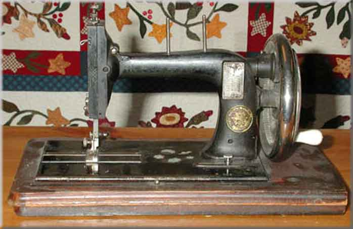

Seidel & Naumann
Maker: Seidel & Naumann AG, Dresden
Model: Saxonia Regia (Royal Saxonia)
Serial #: ?
Date: ?
NOTE: This machine is not a true Saxonia-type machine because it is a high-arm and is larger that 1/2-size. It is included because it bears the name 'Saxonia Regia', and can be regarded as a 'king-size' version.Picture courtesy of Jennifer Hill

©
Alan Quinn 2001
Pictures posted on this page may not be reproduced or distributed in part or in whole without the prior written permission of the relevant copyright owner